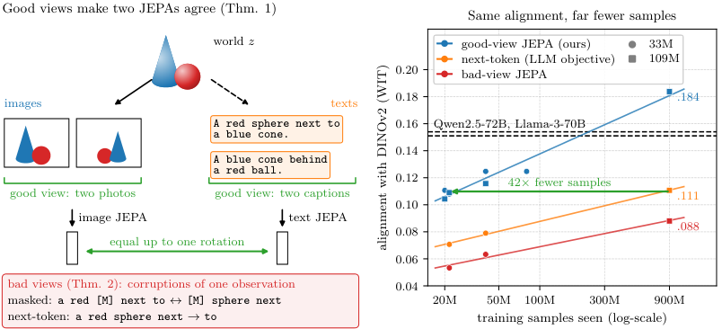

Two mapmakers study one town, one from photos and one from written accounts. If each learns by checking two different accounts of the same street, both end up with the same map, just turned at a different angle. If each only fills gaps in a single account, they also learn that writer's quirks, which the other mapmaker can never match.
지도 제작자 두 명이 한 마을을 연구한다. 한 명은 사진으로, 다른 한 명은 글로 된 기록으로 본다. 둘 다 같은 거리를 다룬 서로 다른 기록 두 개를 맞춰 보며 배우면 결국 같은 지도를 얻고, 방향만 돌아가 있을 뿐이다. 반대로 기록 하나의 빈칸만 채우며 배우면 그 글쓴이의 버릇까지 익히게 되고, 그 부분은 다른 제작자와 절대 맞출 수 없다.
How it works: pick the right positives, then rotate작동 방식은 올바른 긍정 쌍을 고르고 회전하는 것
Whether two modalities align depends on what each encoder treats as a positive pair, not on scale; two observations of one scene make them agree up to one rotation.
두 모달리티가 정렬되는지는 규모가 아니라 각 인코더가 무엇을 긍정 쌍으로 삼는지에 달려 있다. 한 장면의 두 관찰을 쓰면 회전 하나 차이로 일치한다.

- Good views.좋은 뷰.For each image, draw views from different captions (or different frames of a clip), trim each to a random span, and mask 15% of tokens.이미지마다 서로 다른 캡션(또는 영상의 다른 프레임)에서 뷰를 뽑고, 무작위 구간으로 잘라 토큰 15%를 가린다.
- Train each side alone.각자 따로 학습.Same LeJEPA objective for image and text; no encoder ever sees the other modality.이미지와 텍스트 모두 같은 LeJEPA 목적 함수를 쓰고, 어떤 인코더도 다른 모달리티를 보지 않는다.
- Find one rotation.회전 하나 찾기.Fit it on image–caption pairs, or recover it from the shape of unpaired image and caption clouds.이미지와 캡션 쌍으로 맞추거나, 짝이 없는 이미지와 캡션 분포의 모양만으로 찾아낸다.
Key point: bad views spend dimensions on wording핵심은 나쁜 뷰가 말투에 차원을 쓴다는 것
Masked spans and next-token prediction keep more of a caption's own wording, and no rotation can match wording across modalities. The paper measures this directly with five captions per Flickr image.
가린 구간 예측과 다음 토큰 예측은 캡션 고유의 말투를 더 많이 담고, 말투는 어떤 회전으로도 다른 모달리티와 맞출 수 없다. 논문은 Flickr 이미지마다 있는 캡션 다섯 개로 이를 직접 잰다.
Results: a small JEPA beats 70B language models결과는 작은 JEPA가 70B 언어 모델을 이긴다는 것
Trained on the texts of 940M web images, a 109M text JEPA agrees with DINOv2 more than any language model tested.
웹 이미지 9.4억 장의 텍스트로 학습한 109M 텍스트 JEPA가 시험한 어떤 언어 모델보다 DINOv2와 잘 맞는다.
The rotation can even be found with no pairs at all, and the JEPA then beats an 8B language model by 16.8 points on ImageNet-100.
회전은 짝 데이터 없이도 찾을 수 있고, 그렇게 맞추면 JEPA가 ImageNet-100에서 8B 언어 모델을 16.8점 앞선다.
| Metric | Good-view JEPA 109M | Qwen3-8B (rerun) | Prior best |
|---|---|---|---|
| FOSCTTM ↓ | .018 | .018 | .02 |
| CIFAR-10 top-1 | 86.0 | 83.4 | 82 |
| CIFAR-100 top-5 | 67.2 | 61.7 | 62 |
| ImageNet-100 top-5 | 64.4 | 47.6 | 56 |
If you want encoders of different modalities to share one latent space, choose positives that are two observations of the same scene. That buys more alignment than model size.서로 다른 모달리티의 인코더가 하나의 잠재 공간을 공유하길 원한다면, 같은 장면을 따로 관찰한 두 개를 긍정 쌍으로 고르자. 모델을 키우는 것보다 정렬을 더 많이 얻는다.
The theorem covers population optima on a finite world and an identity predictor, not action-conditioned world models. At scale, two of three texts per image come from a CLIP-based captioner; without it, WIT alignment falls from .107 to .060, so the wins over language models partly ride on image-derived text.정리는 유한한 세계에서의 모집단 최적해와 항등 예측기만 다루고, 행동을 조건으로 받는 월드 모델은 다루지 않는다. 대규모 실험에서는 이미지당 텍스트 셋 중 둘을 CLIP 기반 캡셔너가 썼고, 이를 빼면 WIT 정렬이 .107에서 .060으로 떨어진다. 그래서 언어 모델을 이긴 결과는 일부 이미지에서 나온 텍스트 덕분이다.